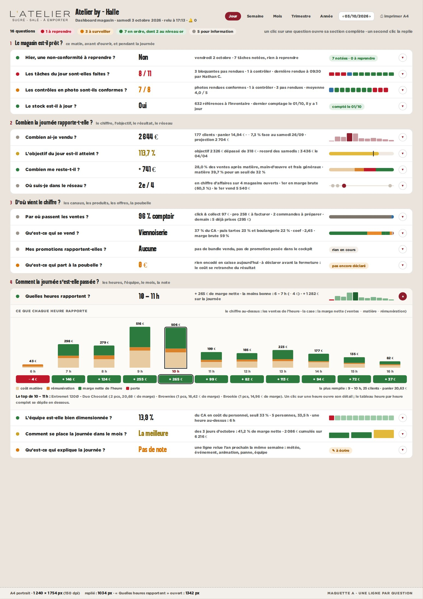
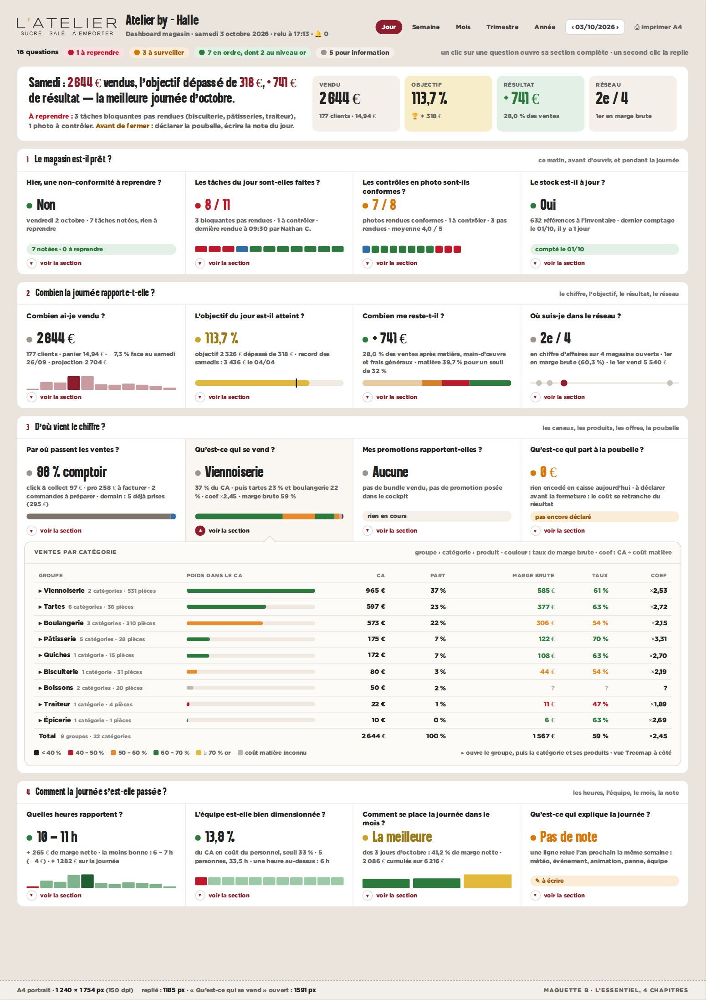
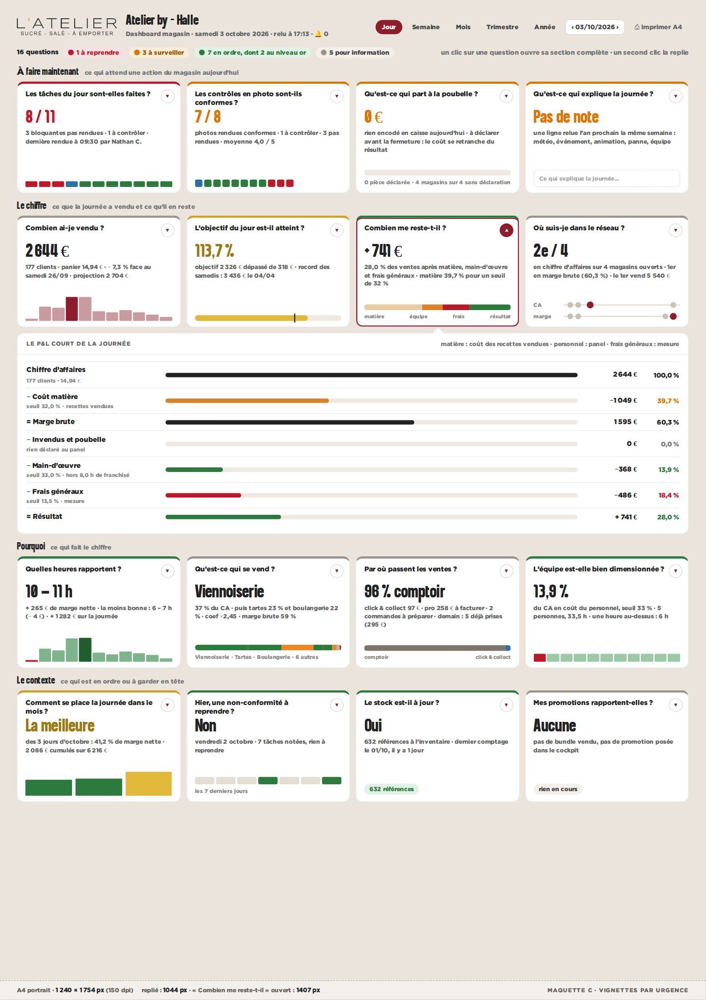

Aujourd’hui la vue Jour de Halle fait 4 555 px de haut, soit 2,6 pages A4. Les trois maquettes posent les mêmes seize questions, avec les chiffres réels de Halle du samedi 3 octobre relus vers 17 h 15. Repliées, elles tiennent dans une page A4 (1 240 × 1 754 px à 150 dpi). Un clic sur une question déroule la section complète d’aujourd’hui sous la question. Chacune des seize sections a été ouverte tour à tour : la page tient toujours dans la feuille. Les photos des contrôles sont hachurées : ce sont des liens signés de 20 minutes.

Seize questions en quatre chapitres, une ligne chacune : la pastille, la question, la réponse chiffrée, la phrase qui la justifie et un mini-graphique. Un clic déroule la section complète sous sa ligne (ici « Quelles heures rapportent ? »).

La journée en une phrase et quatre chiffres en tête, puis quatre bandes (prêt, combien, d’où, comment) de quatre questions en colonnes. La section s’ouvre sous sa bande, une encoche sous la question (ici « Qu’est-ce qui se vend ? »).

Seize vignettes à mini-graphique, rangées par ce qu’elles demandent : à faire maintenant, le chiffre, pourquoi, le contexte. La bordure du haut porte le verdict ; la section s’ouvre sous la rangée (ici « Combien me reste-t-il ? »).